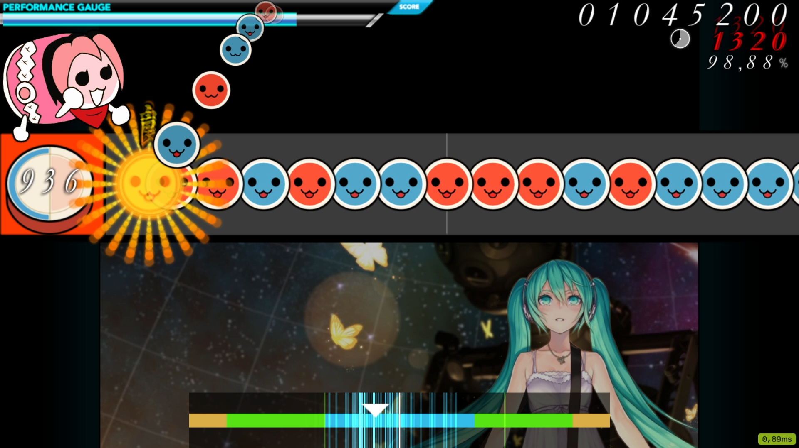
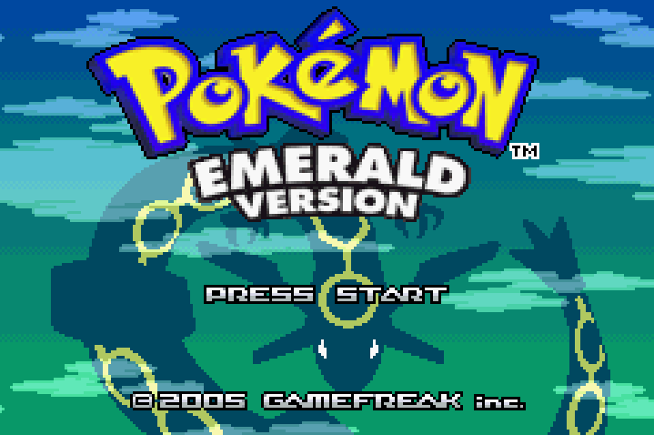
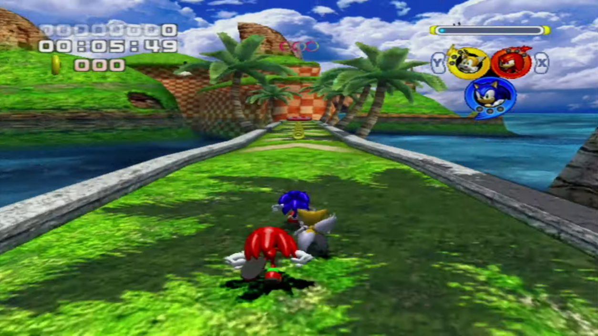
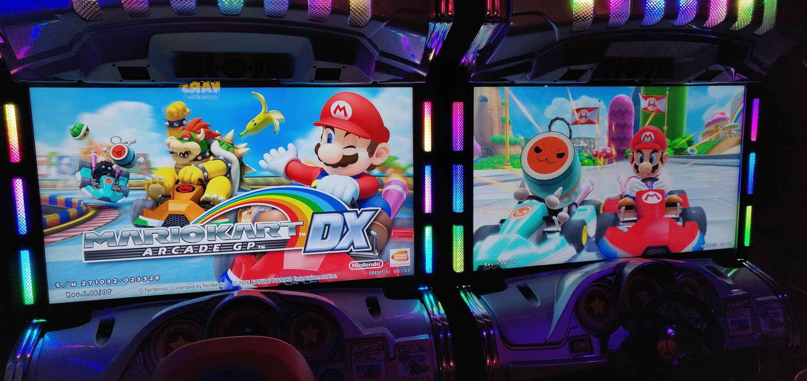
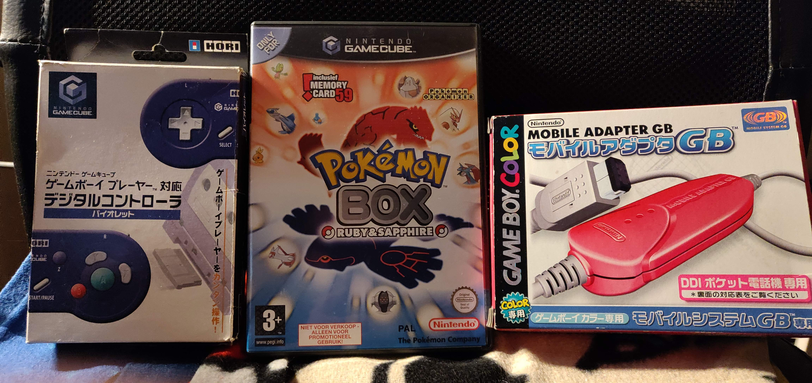
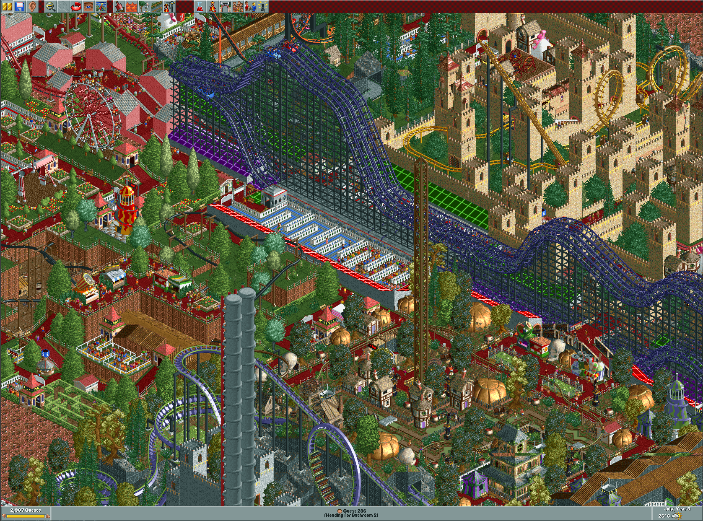

Video Games
Gaming is a big part of my life! My most favourite thing to do in my free time!
Here are some gaming topic I'd like to highlight I deeply care about! :)
Mario Kart
Not going to touch this one too much as I cover Mario Kart in detail in my Mario Kart page.
The game I play the most by far is Mario Kart Wii. Even though Nintendo's online service Wifi shut down in May 2014 we're still able to play online no problem via a community driven online service called Wiimmfi.
We load Mario Kart Wii via the CTGP-R Channel which adds a ton of Custom Tracks and the Wiimmfi service to play online again.
Besides Mario Kart Wii, I have played Mario Kart 7 & Mario Kart 8 pretty actively back when they came out and were more relevant. I mostly focused on Time Trails and less on online.
Lastly, Mario Kart Super Circuit, Mario Kart Double Dash & Mario Kart DS will always have a special place in my heart as I grew to love this franchise because of these games when I was a kid. I do time trail Mario Kart Super Circuit semi-seriously, though haven't done so in a while.
The CTGP-R Channel picture taken from the Wii menu.
osu! Taiko
A game I like to play when I'm bored. A rhythm game you can play mindlessly, listening to great music while playing something that requires skill. Osu! is a pretty competitive game with rankings for each song and overall country rankings, which drew me even closer as directly being able to compete against others in my own country is something that almost no other game has!
In osu! you can play four different rhythm game modes. My favourite mode is the Taiko mode where you hit the red and blue notes in the rhythm. Each colour can be hit with two keys, so you can alternate if it gets pretty fast!
In the Taiko mode I'm currently ranked #1 of Belgium since January 2016 and currently sitting in the Top 400 worldwide.
I sometimes participate in online tournaments against other top Taiko players of the world. I don't perform the best there, though I still really enjoy it!
You can check out my osu! profile here! :)
Gameplay of the Taiko mode on this map.
Pokémon GO
When I'm out of the house, Pokémon GO is usually on. Have been playing since the start in 2016 and never stopped.
I used to be pretty hardcore, but have since slowed down considerably. I do try to play daily and keep up with the newest events and raid bosses!
I'm a bit ashamed to admit how much money I've spend on this game in total, hahaha!
In my town I have been able to have a bunch of new Pokestops added to the game via the waypoint submission system. I always try to make the game better for everyone who's plays in my area! The rules for when a Pokestop is valid are pretty strict and annoying, so sadly we have lost many possible good candidates by people submitting them not knowing how the system works. :(
If you're interested in how the Pokestop system works, I highly recommend reading this article.
Picture of my profile on Pokémon GO
Super Mario Bros
When it comes to Nintendo, Mario is the franchise I love the most! Grew up with Mario games and never stopped loving them!
The first encounter with Mario was on the SNES with Super Mario World and Super Mario All Stars. Those two games will always have a special place in my heart!
Later on I discovered Super Mario Sunshine and Super Mario Galaxy which really cemented my love for the Mario games!
When I was young I used to draw level designs on paper for Super Mario World and other games. When I grew older I found out ROM hacking existed and is possible for games like Super Mario World, you can imagine how excited I was! I have spent many hours tinkering with level designs in Lunar Magic, a level editor for Super Mario World which I discovered on SMWCentral!
You can find my profile on SMWCentral here, though there isn't too much on it! :)
Over the years I've seen many Mario games released and get a picture of where the franchise is heading. At the moment with how the latest main-line Mario game, Mario Oddysey, looks and plays, I'm not the biggest fan of the direction Nintendo is taking Mario. I much prefer the art and universe style direction Mario was had during the Gamecube era. Though it might just be me being nostalgic for those days, but I can't help feeling like this.
However, I will always keep a close eye on the newest Mario games and play them! I don't think at this point in my life I'm ever going to fully stop loving the franchise, haha!
Gameplay from my favourite SMW ROM hack: Luigi's Adventure by Anikiti
Pokémon
The whole Pokémon franchise I'm just as big of a fan of as the Mario franchise! Been a fan ever since I played Sapphire when it got released. Because of nostalgia, Hoenn is my favourite region! I can always find enjoyment replaying the GBA Gen 3 games, especially Emerald with its amazing Battle Frontier post-game!
Just like with Mario, I'm not too fond of the direction Pokémon is heading! Game Freak is making great games, but Pokémon literally being the biggest video game franchise in the world, you'd expect them to make insane open-world, the sky is the limit games right!? But that's sadly not the case.. Overall the games have average finishing touches and make innovations on the wrong sides that fans don't care about. One day I hope to see Pokémon release a game that follows the fans their desires. I mean, the fans are the ones who actually Play the games, a general widespread idea and mindset of fans usually is the best direction to take a franchise, so why ignore it??? It will never make sense to me. :(
Even with these thoughts I will continue to follow the Pokémon franchise and play their games for as long Pokémon exist! :)
Title screen of Pokémon Emerald on the GBA.
Sonic The Hedgehog
Before Mario became a bigger part of my life, Sonic was actually my favourite franchise! I got introduced to Sonic via Sonic Heroes on the PlayStation 2 in 2005. That game unironically taught me how to do 3D platformers effectively as I found that game insanely hard! Now it's one of my favourites, one which I frequently revisit for fun! Probably a lot of nostalgia bias, but it's how I feel.
Even the older sonic games like Sonic 2 and 3 & Knuckles are really great games and ones I revisit often! I got introduced to them via Sonic Mega Collection Plus on the PC. That game honestly really sparked the ultimate Sonic fan in me cause via its Extra content I found out here's tons and tons of extra Sonic content and lore I had no idea about! Apparently Sonic comics exist!!!! Sadly, since I live in Belgium I couldn't get my hands on any comics as they're US only... Over the years I imported some to Belgium so I could enjoy a snippet of what was out there. Obviously nowadays I torrented the whole comic series on my phone and it has been such a pleasure to finally read the whole thing! Sadly, the original Sonic comics by Archie have ended and IDW had taken the lead to create the new comics. I will miss the Archie comics as they had much more artistic freedom in story and character designs compared to IDW. You will be remembered fondly, Archie! :)
Sadly, just like with Mario and Pokémon, I'm not super pleased with where Sonic is heading, or rather has been heading ever since Sonic Generations. All we want as Sonic fans are games just like Sonic Adventure, Sonic Adventure 2 Battle & Shadow The Hedgehog! Shounen like stories work very well for Sonic and sadly Sonic Team never brought that back and now instead focus on making Sonic games for humour and light hearted plots... Maybe some day we'll see it coming back, but until then I will follow the Sonic games with a close eye!
Picture of gameplay of Sonic Heroes.
Arcades
I'm a big arcade fan! My area sadly don't have arcade venues, but at the coast of Belgium there are some venues and that's where I really found my liking for them! My dream is to one day own a real arcade cabinet! :)
The game that drew me to arcades was Outrun 2. I liked the arcade style gameplay of the game, but it was still a game that required skill. I loved the idea that you could be good at the game, set a great time record and then have your name shown in the rankings for all the people that pass by the arcade machine. You could say it has its competitive side, which drew me in!
Other arcade games like the Mario Kart Arcade GP series, the Initial D arcade games and Taiko no Tatsujin are one of my favourites too! Most of these we don't have in Belgium, or even in Europe like Initial D & Taiko, so I play those games via a PC application called TeknoParrot, which tricks the games to run on a regular PC thinking they're on a real arcade machine. I cannot wait to visit Japan and try all of them out!
Lastly, to highlight on other arcade game, I do like to time trail Initial D 8 Infinity often! There are community rankings that I try to join, but I'm nowhere near good enough yet to be considered a pro!
Picture of the Mario Kart Arcade GP DX cabinets at Disneyland Paris.
Retro gaming & Emulation
Over the years I have grown to like retro gaming a lot and have been slowly becoming a small collector. More specifically the SNES, GBA and GCN era. Though, GBA & GCN aren't considered to be retro just yet, they hold a lot of nostalgic value for me.
I don't collect everything the consoles have to offer, I focus on games and accessories that I find interesting! Like for example the Mobile Adapter GB, or the GCN Hori Pad or Pokémon Box for the Gamecube. Pretty niche things, but hey interest me, so I hunt for them!
Retro gaming goes further than just owning the consoles and buying interesting and expensive stuff. I really care a lot about emulators! They're the coolest type of programs that exist!
Console emulators literally allow older consoles, or any console really to exist for ever! Like ever, even if every single Gameboy in the world is broker and beyond repair, the emulators will continue to exist and provide us with those console experiences for ever.
Some emulators provide enhancements to the graphics and other fantastic features which makes the experience on those older games often much better. I absolutely love and prefer playing my favourite games on emulators these days!
Over the past few years I've invested in hardware to rip the data off of my game discs and cartridges in order to have them saved on my PC and be backed up for ever. And also to play them on emulators without having to download any roms from the internet! :)
Picture of the GCN Hori Pad, Pokémon Box & the Mobile Adapter GB.
Others
I might be a full-time Nintendo fan, but that doesn't mean that's the only thing I play. There are many other games I absolutely love and care about on other platforms! Here are the ones you get me the most excited for!
The game that introduced me to PC gaming was the first Rollercoaster Tycoon. That game holds so much nostalgic value for me, it's a game I still often play to this day. Nowadays I like to play RCT on the open-source launcher OpenRCT2.
Another franchise I deeply love is Danganronpa. Having first watched the anime, I later played the games and man, I fell in love! The characters, the story, the atmosphere, everything is just so perfect!! I'm really big on video game story lores and Danganronpa just fits in so well in that aspect!
Minecraft is a game I discovered quite late in its life-time. In 2019 I started playing on my brother's server and I just couldn't stop playing any more. Before I didn't care about Minecraft at all, I thought it was just a stupid time waster for small kids, but now I'm the one wasting my time on it, hahaha! When I play it's usually on my private server I host for my family.
As for MMO RPG's, I'm usually not into those at all, but Guild Wars 2 really changed my view on them! They showed me how cool open world experiences can be and that game genres I normally wouldn't pick up can still be really fun to play from time to time! I still play Guild Wars 2 occasionally nowadays.
Talking about MMO's, a game that took me by storm is Genshin Impact. Honestly, the anime fan in me is what drew me to the game. It's such a pretty game! The environment and anime style rendering really is incredibly stunning! I do dislike the Gacha mechanics of the game, but I guess that's something I'll have to get used to since that seems to be the norm of the game industry these days...
Gameplay from RCT1 on one of my favourite maps.
Last comments
You can tell that I'm somewhat stuck in the past with my game selection. It's really hard for a new game to catch my attention, so I stick to the games I already like and get all of my satisfaction from them. I'm big on nostalgia, I don't know what else to tell you!
Since I've experienced so much in gaming, I have my own ideas as for where those franchises in my opinion should move to. More often than not, those views aren't the same with the companies that create the games and that's such a shame. I'm by far not the only one feeling this! Especially for example with how Nintendo handles re-releasing Retro Game from their libraries. You don't want us to pirate the older games, well then provide us a way to buy them then instead of just selling us Super Mario Bros for the NES for the 90th time... The answer is so simple, Nintendo, so just do it already! You guys will earn a fortune!!! Oh well, maybe one day we'll see a Netflix like platform for older games using community emulators which are always, by far better than what the industry can create. Time will only tell.